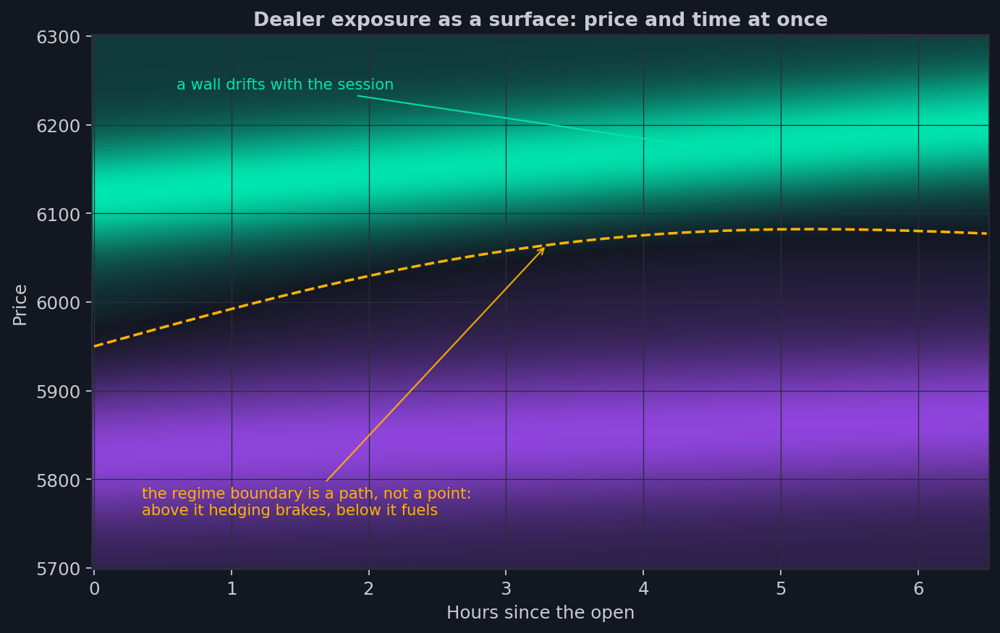
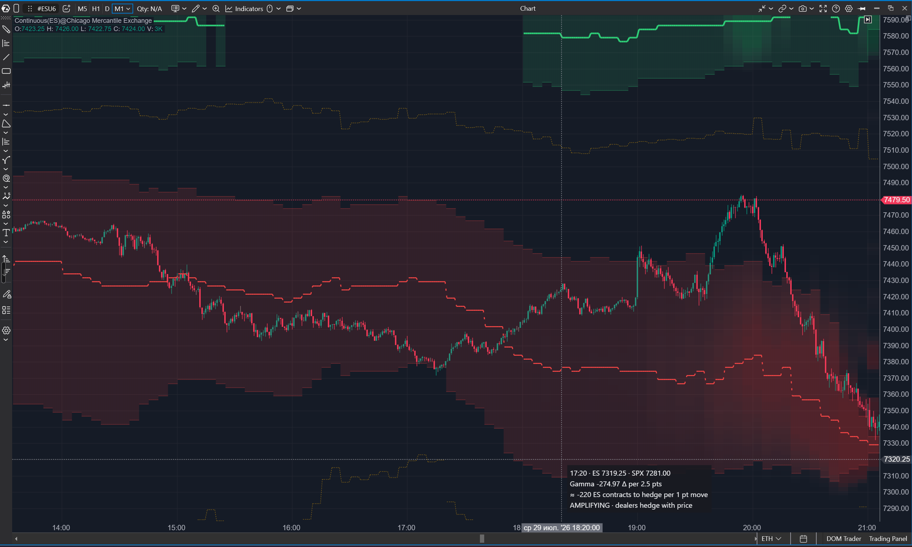
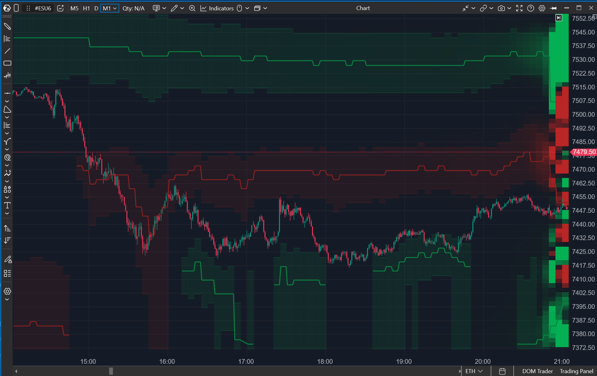

13. Superficies: el MM no tiene niveles
Enséñale a un MM de opciones un gráfico con líneas horizontales — muros, imanes,
fronteras — y pregúntale dónde están sus niveles. Se encogerá de hombros. En su
libro no hay niveles. Hay posiciones; las posiciones tienen griegas; y las griegas
tienen la propiedad incómoda que venimos observando desde la lección 3: cambian
con el precio y con el tiempo. La fuerza con la que el libro responderá a un
movimiento del mercado depende de dónde llega el precio y de cuándo llega.
El mismo strike a las diez de la mañana y a las cuatro menos cuarto son dos
strikes distintos.
Todo lo que hemos dibujado hasta ahora respondía a la pregunta «qué está pasando
ahora». El grupo final de indicadores del curso responde a una pregunta más
adulta: «qué pasa si».
De las líneas al terreno
Toma el libro del MM del minuto actual — el feed nos lo da con exactitud — y hazle
una pregunta: ¿cuál será tu exposición gamma en cada nivel de precio, en cada
momento de lo que queda de sesión? El libro se conoce, las griegas se pueden
calcular — la respuesta es computable. Lo que sale no es ni un perfil ni una
línea, sino una superficie: un mapa de fuerzas sobre el plano precio × tiempo.

Mira en qué se han convertido dos héroes de las lecciones anteriores. El muro —
hasta ahora una línea horizontal — resulta ser una cresta que deriva a lo largo
del día: un nivel que por la mañana estaba en una marca espera al precio en otra
por la tarde. Y el punto de gamma cero de la lección 5 se ha estirado en una
frontera sinuosa: por encima de ella la cobertura frena el mercado; por debajo, lo
acelera — y la propia frontera se desplaza a lo largo de la sesión. Una línea
horizontal es lo que queda del terreno cuando lo miras desde un único punto en el
tiempo. La superficie muestra el terreno entero.
Una advertencia honesta antes de pasar a los indicadores — y está integrada en la
propia imagen. El campo detrás de las velas es realidad observada: cada minuto
de la historia está dibujado con el libro de ese mismo minuto; ningún pronóstico
rancio se queda en pantalla después de los hechos. Y a la derecha de la última
vela el indicador continúa la superficie en una zona de proyección — hasta el
final de la sesión actual y, tras el cierre, hacia la apertura de la siguiente. Es
un pronóstico hecho con el libro más fresco: «así será la exposición si el libro
no cambia». El libro cambiará — el mundo 0DTE, lección 7 —, así que la proyección
se recalcula con cada minuto nuevo, y los tooltips dentro de ella lo dicen sin
rodeos: FORECAST from the book … earlier · not observed, o, para la mirada
vespertina hacia delante, OUTLOOK for the … open · projection, not observed.
Confundir lo observado con lo esperado no es una opción.
Options X-Ray: GEX Heatmap — el terreno de la fuerza gamma
El primero de los dos mapas de calor dibuja la superficie gamma justo detrás de
las velas del gráfico: un campo de color donde un extremo de la escala es frenado
(los MM cubren contra el movimiento), el otro es aceleración (con el movimiento),
y la saturación es la fuerza del efecto. Las velas corren por encima del campo:
puedes ver al precio literalmente cabalgar el terreno — atascándose al entrar en
una zona densa de frenado y deslizándose por los parches vacíos.
Sobre el campo, el indicador traza dos líneas de nuestro glosario. La frontera de
régimen discontinua — esa misma línea sinuosa donde el signo se invierte:
cruzarla significa que el mercado cambia de carácter, y ahora puedes ver no solo
dónde está sino hacia dónde va. Y las crestas de los muros — cordilleras de
exposición máxima trazadas a través del tiempo: línea continua donde la cobertura
sostiene el precio, quebrada donde lo deja pasar. Todas, junto con el propio
campo, continúan en la zona de proyección: puedes ver dónde llegarán el muro y la
frontera para el cierre — o dónde estarán esperando al precio en la apertura de
mañana.
Pasar el cursor abre una tarjeta en la gramática común del paquete: un titular de
veredicto en color — DAMPING, AMPLIFYING, REGIME BOUNDARY o el nombre del
muro — y una línea principal brillante: aproximadamente cuántos contratos ES
tendrán que empujar los MM por el mercado por cada punto de movimiento en este
nivel. El valor bruto de gamma y la mecánica ("MM hedge with price — expect
follow-through") quedan debajo en una línea atenuada: primero la consecuencia para
el trader, luego la cocina de las griegas.

Options X-Ray: Charm Heatmap — el horario de la fuerza del tiempo
La segunda superficie pertenece al charm — la fuerza cuyo gatillo, como vimos en
la lección 11, siempre se dispara: el tiempo pasa en cualquier escenario. Eso hace
de su mapa el más directivo de todos: las zonas rojas son niveles donde el paso
del tiempo obligará a los MM a vender futuros; las verdes — a comprar. La
tarjeta de hover lo dice con todas las letras: un titular SELL PRESSURE AHEAD o
BUY PRESSURE AHEAD y una línea brillante "MM must SELL ≈ N ES contracts here" —
con el charm bruto atenuado debajo. La zona de proyección también está aquí: el
horario de los flujos obligatorios continúa hasta el final de la sesión.
Recuerda de la lección 7: en un mercado de un día, todo efecto se acumula hacia el
cierre. En la superficie del charm lo ves literalmente — el campo se enciende
hacia la tarde, y la última hora es la más brillante. El mapa de charm de la
mañana es un fondo tenue; el de la tarde, un horario de flujos obligatorios para
el resto del día.

Options X-Ray: Surface Profile — una regla para el mapa de calor
Un campo de color tiene una debilidad: la saturación no se puede medir a ojo. El
tercer indicador de la lección resuelve exactamente eso — toma una columna de la
superficie, el corte en el momento de una vela, y lo despliega como un histograma
horizontal en el borde del gráfico: barras por nivel de precio, la longitud es
fuerza, el color es signo. El mismo material que el mapa de calor, pero con
números: las etiquetas de los picos convierten la gamma en «±N ES por punto de
movimiento» y el charm en «sell/buy N ES», y las tarjetas de hover hablan la misma
gramática — DAMPING/AMPLIFYING, SELL/BUY PRESSURE AHEAD.
La superficie se elige — gamma, vanna o charm. Aquí no hay cestas de vencimientos,
y es deliberado: el proveedor calcula la superficie sobre el libro completo. Y el
corte puede asomarse a la zona de proyección: apunta más allá del último minuto
observado, las barras se atenúan y la tarjeta dice honestamente "FORECAST … not
observed".
El control del tiempo se comparte con el Strike Profile: tres modos en ambos
perfiles. Por defecto el corte vive en el momento actual — el minuto más
fresco del libro — y no cambia al desplazar el gráfico. Un clic en el chip de la
franja enciende el scrub: el perfil salta con el cursor. Y el pin —
Ctrl+clic en cualquier vela fija el perfil a ella: una marca discontinua cae sobre
la vela, el chip se convierte en "Pinned · 13:35 ×" (hora del gráfico, la misma
que muestra el eje), otro Ctrl+clic mueve el pin, un clic en el chip lo suelta. La
pista vive en el propio chip — pasa el cursor por encima.
Ambos perfiles viven por defecto en un panel vertical propio junto a las
velas: la escala de precios sigue compartida, así que los niveles siguen
alineándose con el gráfico. Así es como, por ejemplo, el libro de strikes y el
corte de fuerzas quedan lado a lado: las posiciones y su consecuencia, una junto a
otra. El perfil puede volver al gráfico como overlay si lo deseas, y el layout del
Strike Profile es aún más rico — la vista multisesión de la lección 12.
Dos maneras de leer un mismo corte
El perfil tiene una segunda lectura, más adulta, y se elige de la misma lista que
la propia griega: junto a "Gamma", "Vanna" y "Charm" está "Gamma · hedge
response to a move".
La diferencia está en la pregunta que responde una barra. La lectura simple
muestra la fuerza en un punto: cuántos contratos ES de cobertura genera un
punto de movimiento exactamente en ese precio. La lectura de respuesta muestra la
fuerza a lo largo de un camino: si el precio se aleja de ese nivel la ventana
elegida — diez puntos por defecto —, cuánta cobertura se acumula por el camino. Lo
primero es una propiedad del nivel; lo segundo, una propiedad de la ruta.
Por eso en el modo de respuesta cada fila de precio se divide en dos: la mitad
superior responde por un movimiento hacia arriba desde ella, la inferior por
un movimiento hacia abajo. El color sigue significando el régimen: una
respuesta amortiguadora dice que los MM operan contra el movimiento (vendiendo en
el rally, comprando la caída); una amplificadora, que operan con él. La asimetría
entre esas mitades es todo el sentido del modo: una mitad amortiguadora larga
arriba y una corta abajo significa que el precio se atasca subiendo y viaja libre
bajando.
El vínculo entre las dos lecturas es fácil de comprobar con aritmética. En un
tramo suave del perfil, la respuesta sobre una ventana de diez puntos es
aproximadamente diez veces la densidad puntual — porque es la integral de la misma
magnitud. En un pico único y afilado la proporción sale menor: la ventana recoge
también a los vecinos más débiles, así que la densidad media a lo largo del camino
queda por debajo del pico.
La ventana es un ajuste aparte, desde cuatro puntos en adelante. Ese suelo no es
arbitrario: la rejilla de precios del proveedor avanza en pasos de 2,5 puntos, y
una ventana más estrecha que un paso sumaría un rango vacío.
El modo existe solo para la gamma, y no es una simplificación. La gamma responde
al movimiento del precio, así que sumarla a lo largo de un camino de precios tiene
sentido. La vanna responde a los desplazamientos de la volatilidad y el charm al
paso del tiempo; una ventana de precios no significa nada para ninguno de los dos.
Por último, los mismos números están disponibles sin cambiar de modo: en la
lectura simple la tarjeta de hover muestra primero la fuerza en el nivel y su
veredicto, y debajo — como bloque aparte — la respuesta hacia arriba y hacia
abajo. Así que cambia de modo cuando necesites la asimetría en todos los niveles
a la vez, y no solo en el que está bajo el cursor.
Cómo encaja esto en el flujo de trabajo
Apilemos juntos los pisos del paquete — ahora se ven todos a la vez. Los
indicadores de flujo (lección 10) te dicen quién está haciendo qué ahora mismo.
Los mapas de strikes (lección 12) — dónde están las fuerzas en este momento. Las
superficies responden a la tercera pregunta: con qué se topará el precio a
continuación — en todos los escenarios a la vez. Son tres horizontes temporales
de una misma mecánica, y juntos cierran el ciclo completo: ves el flujo —
entiendes cómo cambió el mapa — juzgas qué promete el mapa a continuación.
Los pisos del paquete están construidos, desde el volumen simple hasta las
superficies. La próxima lección les pone encima un panel de control: un indicador
que pliega las conclusiones de todos los anteriores en cuatro veredictos y dos
cintas — y sirve a la vez de repaso de todo el curso en una sola pantalla.
- El MM no tiene niveles: la fuerza de su libro depende de dónde llega el precio y de cuándo — una superficie sobre el plano precio × tiempo.
- El muro se convierte en una cresta que deriva; el punto de gamma cero, en una frontera de régimen móvil.
- Detrás de las velas está la realidad observada (cada minuto dibujado con el libro de ese minuto); a la derecha de la última vela, la zona de proyección desde el libro más fresco, con tooltips etiquetados "not observed".
- GEX Heatmap es el terreno de frenado y aceleración detrás de las velas; Charm Heatmap, el horario de los flujos forzosos del tiempo, que se enciende hacia el cierre.
- Options X-Ray: Surface Profile es el mismo corte de la superficie como histograma medible: una regla para los mapas de calor, con scrub, pin (Ctrl+clic) y panel vertical propio.